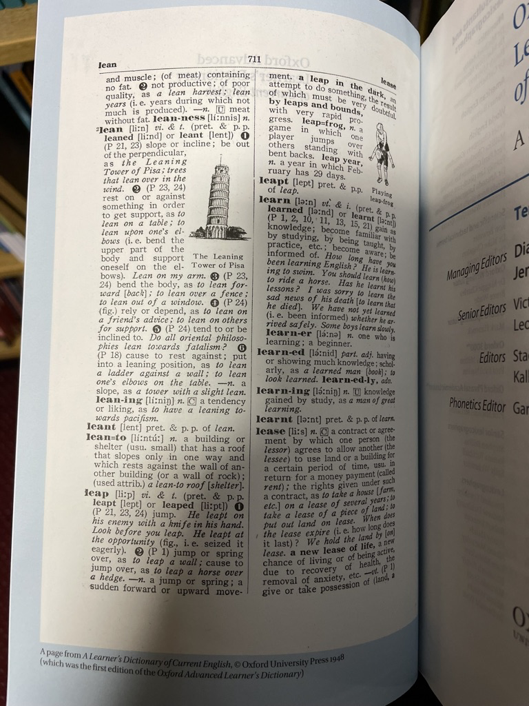
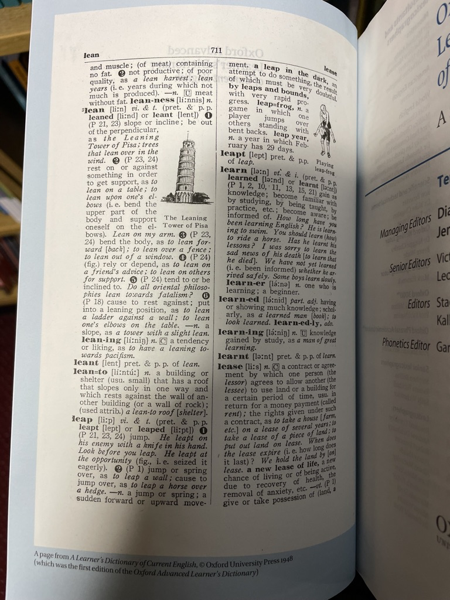

How I designed mobile app from scratch
The app solves the problem of expanding vocabulary for advanced English speakers. I had a chance to get my hands on working with APIs, native mobile products and interface guidelines.
Time to read: 6 minutes
Table of contents
Problem and idea
- I am advanced english speaker. BUT I want to achieve native’s level
- Need to grow my vocabulary
- english word <-> translation. WRONG WAY
- english word <-> definition. RIGHT WAY
- Need a tool to effortlessly save and practice relevant to me words
Metrics I would track
Since the app isn't live yet I can only theorise here.
Daily Active Users (DAU) + WAU + MAU
What: number of unique users who use the feature at least one time a day
Why: to understand if the number of active users is growing or falling
Monthly Recurring Revenue (MRR)
What: revenue from the subscriptions split by the revenue from new, retained and resurrected users
Why: to understand if [1] the app earns the money and [2] whether money comes from new or retained users
Funnel conversion rates
What: conversion rates between “acquisition”, “activation”, “retention”, and “revenue” steps. Plus time to convert, and frequency of each step.
Why: to identify areas for improvement
In addition to the above, I would watch Hotjar sessions and track the total number of words saved and practised per user per day to understand if people actually use the product.
Competitors
I don't want to solve the problem that is already solved. Are there any products fitting my criteria?
| Logo | Name | Can add your of words | Source of definition | Can practice | Revenue model | # of users |
|---|---|---|---|---|---|---|
 |
Atlas | Yes | Oxford dictionary | Yes | Subscription | TBD |
 |
Oxford dictionary | Yes | Oxford dictionary | No | Subscription + Ads | TBD |
 |
Cambridge Dictionary +Plus | Yes | Cambridge dictionary | No | Subscription + Ads | TBD |
| Fluent Forever | Yes | User input | Yes | Subscription | TBD | |
 |
Word Up | No | Some(?) dictionary | Yes | Subscription | TBD |
 |
Word of the Day | No | Oxford dictionary | No | Subscription | TBD |
 |
LinQ | No | Some(?) dictionary | Yes | Subscription | TBD |
 |
GRE Vocabulary Flashcards | No | Some(?) dictionary | Yes | Free | TBD |
 |
Lockcard | Yes | Some(?) dictionary | No | Subscription | TBD |
Conclusion
"Atlas" app solves fits my criteria. But it focuses on B2C segment.
Business model
Solution and user segments are only a few parameters defining the product. How can I distinguish myself from competitors and make a 10x better product?
I use "Lean Canvas" when business modeling. I find it more intuitive and comprehensive rather than Business Model Canvas, Value Propositions Canvas and other models.
Design process
Jobs To Be Done
I found the Job Stories framework the most exhaustive way to frame my ideation process. It allows me to start with a problem rather than solution.
Saving new word
Accessing saved words
Practicing your words

Sketches and low fidelity wireframes
I started with exploring the structure of modern printed dictionaries. Advanced learners already use dictionaries. I don't want to disrupt familiar workflows.
 



Researching apps of competitors helped to [1] identify established workflows and [2] get inspired by some of thier solutions. E.g. flashcards are used among almost all apps. But learning algorithms are different.


Drawing sketches using pen and paper helps to activate my brain and gives more freedom.
Did low-fidelity mockups to test if main workflows make sence and solve initial problems.

And experimented with forms to add a pinch of me into design.

Colour palette
WORK IN PROGRESS
Primary. The core of each dictionary are words and their background. Black and white. I wanted to stick with classics.
Secondary. Red often used to for accents e.g. in old books. Green is a complementary colour.
Tertiary. I needed a bunch of different colours to distinguish 8 parts of speech.

I combined colours to make sure they work on each other

Typography
WORK IN PROGRESS
Result: high fidelity wireframes
Saving new words
Accessing saved words
working with dictionary
searching for saved words
Practicing your words
Key takeways
Results
- The whole mobile app I designed myself and quite happy with :)
Lessons learned
- Interactive prototypes. Gained a deep dive into prototyping entire workflows and utilising interactive components in Figma. Also got a chance to learn other tools e.g. Protopie.
- Familiarity with guidelines. I relied on both Material Design by Google and Human Interface Guidelines by Apple while choosing the layout grid, margins, paddings, touch areas etc. By doing so, I was able to ensure that my designs were in line with industry standards.
- Design system and interactive components. I studied design systems made by Uber, Atlassian and OpenAI. They guided me in creating individual elements and components for my app.
- Colour palette, typography, grid systems. I relied on "Grid Systems in Graphic Design" by Josef Müller-Brockmann, "The New Typography" by Ian Tschichold and YouTube videos by some brilliant people. These topics are of an infinite depth. But at least I started.
Next steps
- onboarding
- profile
- subscription page
- teacher’s side of interface
- web version
- more user interviews
- find engineering buddy or learn React Native myself